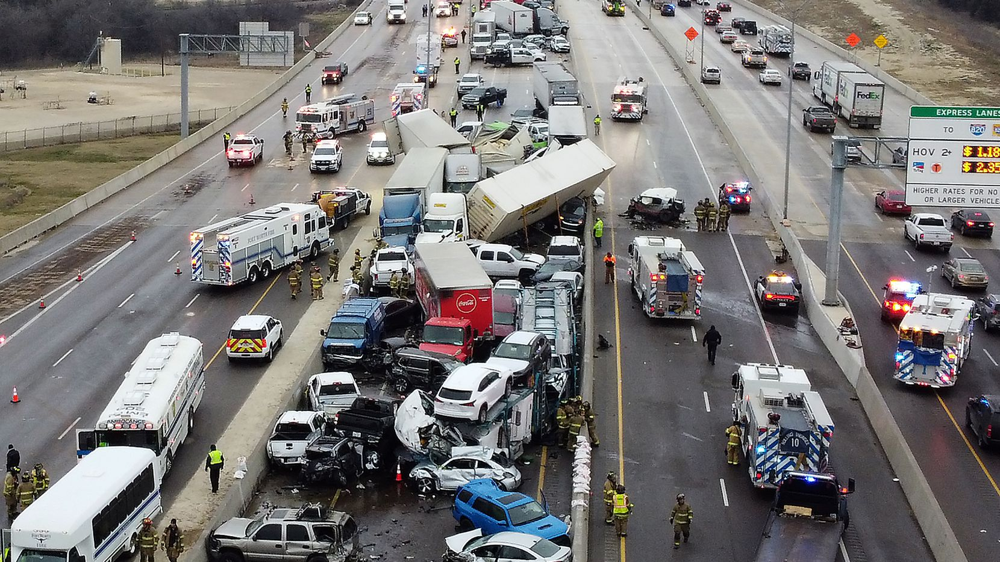
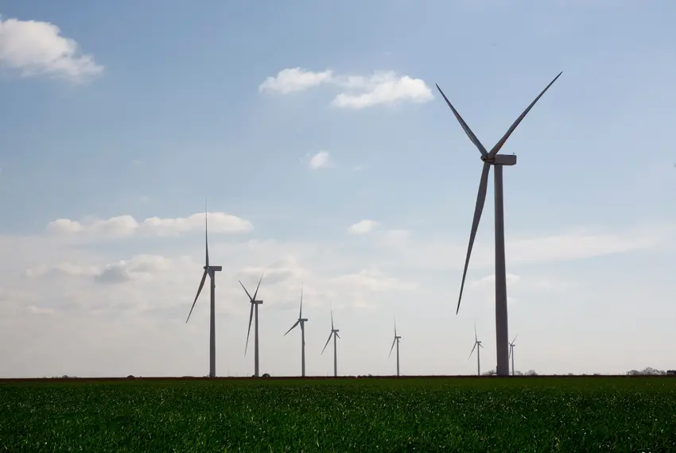
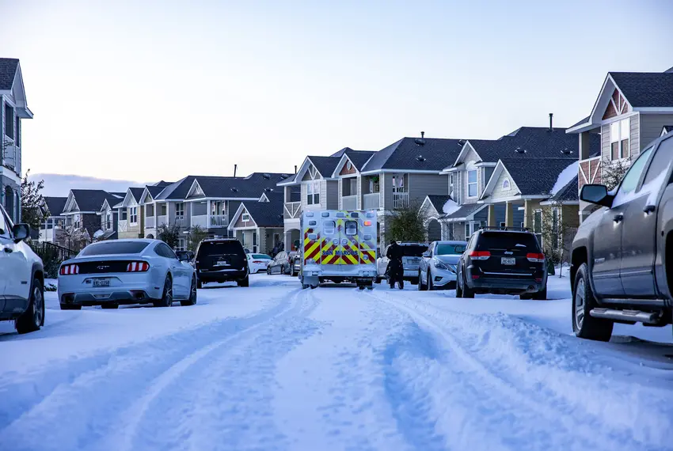
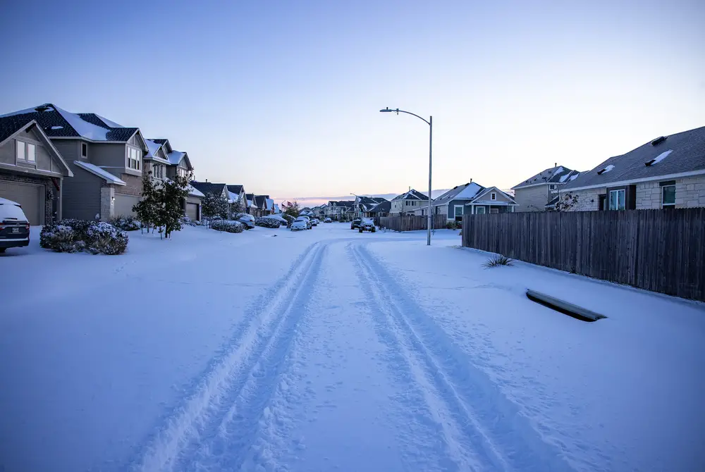

What is happening in Texas?
As Texas finds itself in the midst of a rare and brutal blast of winter weather, with temperatures plunging below freezing levels, over 4.3 million people across the US state have been left without power after high demand for electricity caused the power grid to repeatedly fail. Over a dozen deaths have been attributed to the unprecedented winter storm ‘Uri’ so far in the state, with local authorities warning that frigid conditions are likely to continue for another few days. On Sunday, President Joe Biden declared an emergency in Texas, ordering federal assistance to aid response efforts. The Electricity Reliability Council of Texas (ERCOT), the operator of the state’s power grid, faced sharp criticism from state leadership, including Governor Greg Abbott, who said that the body “has been anything but reliable over the past 48 hours.” Meanwhile, the power grid operators have said that they have no way of predicting when the power outages will end. “We needed to step in and make sure that we were not going to end up with Texas in a blackout, which could keep folks without power — not just some people without power but everyone in our region without power — for much, much longer than we believe this event is going to last, as long and as difficult as this event is right now,” ERCOT CEO Bill Magness told Dallas Morning News. The sudden cold snap also sent natural gas and power prices soaring to record levels in some parts of the country, Bloomberg reported. - https://indianexpress.com/article/explained/texas-winter-storm-blackout-7192677/
Notable News
The Dallas Morning News: "At least 6 dead in 133-car pileup in Fort Worth after freezing rain coats roads" |
The Texas Tribune: "No, frozen wind turbines aren't the main culprit for Texas' power outages" |
KHOU: "Texas boy dies after 2 nights in mobile home without power" |
Washington Post: "Hypothermia, carbon monoxide and cold pets: Google searches underscore depth of crisis in Texas" |
Shared by Texans